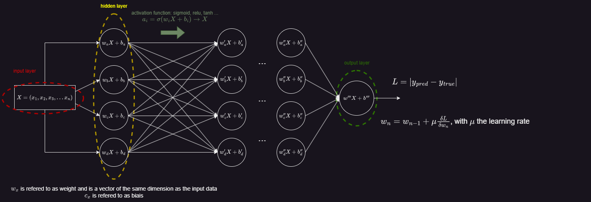
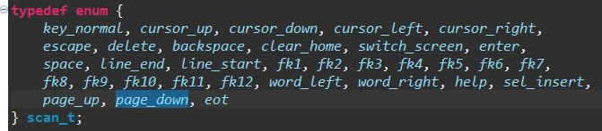
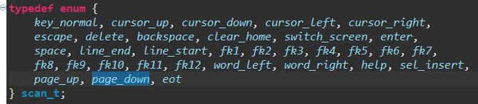

Layers
Input layer
The input layer is the layer that gets our data. It allocates 1 neuron per input argument.
For example, an input argument for an image would be a pixel. The dimension of the input layer amounts the dimension of the one input argument.
Each neuron of the input layer is connected to all neurons of the next layer, the hidden layer.
Hidden layer
a hidden layer has no contact with the outside, unlike the input and output layers. It is the layer that processes the data.
Each neuron of this layer gives a certain weight \( w_n \) to the input data, with \( n \) the dimension of the input data.
The output of each neuron is the sum of all weighted inputs plus a bias \( b \) and the result is passed through an activation function (will come back to this later on).
What comes out of each layer of a hidden layer is \( y = \sigma(w_1x_1 + w_2x_2 + ... + w_nx_n + b) \), with \( \sigma \) the activation function and \( y \) of dimension one.
As for the input layer, each neuron of the hidden layer is connected to all neurons of the next layer, which may be another hidden layer or the output layer.
Output layer
The output layer is the last layer of our model and
The graph below depicts an overview of what a NNL look like.

Backpropagation
Though I have still troubles to grasp how this backpropagation works (it is on working progress haha). I understand
things separately but ... well. I will try to explain what I have understood and also bring up what I am still struggling with.
At each iteration (each time the model is fed with an input data \( X \)), it computes the loss (difference between prediction and truth) after having processed the data according to weights \( w_n \).
For each neuron this would go as follows:
\[ X = (x_1, x_2, x_3, x_4 ... x_n) \rightarrow a_i = \sigma(w_{i1} \cdot x_1+w_{i2} \cdot x_2+w_{i3} \cdot x_3+...+b) \]
with \( a_i \) the output of the neuron \(i^{th}\) of a given layer and \( \sigma \) the activation function.
Already here, I am not sure about the activation function. I have seen several activation functions such as the sigmoid function, the ReLU function, etc.
However I don't fully understand their purpose and why not other functions.
Loss and cost functions
Then, after going through all hidden layers, it reaches the output layer, where it computes the loss function. There exist different loss functions,
such as the mean squared error (MSE), absolute error (AE), Huber, etc. For sake of simplicity, I will only consider the MSE.
\[ L = \frac{1}{2}(y_{pred}-y_{true})^2 \]
Adjusting the weights
When I will have studied more about the math behind I will try to explain it here. However, I got the concept. The idea is to compute the gradient of the cost function (batch of data) with respect to the weights and biases of the model.
After each batch of data the model takes the average of each loss function. So let's say our model is fed with batches of 32 inputs, it will compute the cost function as follows:
\[ C = \frac{1}{B} \sum_{i=1}^{B} L_i\]
where \(B\) is the batch size (32 here) and \( L_i \) the loss function of the \(i^{th}\) input of the batch. Then, the model computes how much each weight of the output layer impacts the cost function.
If a slight variation of a weight \( w_i \) causes a significant variation of the cost function, then it means that this weight has a great impact on reducing the error.
On the other hand, if a slight variation of a weight \( w_i \) causes a slight variation of the cost function, then it means that this weight has a small impact on reducing the error.
To empower this chacteristics, we use the gradient \( \nabla \), which is an equivalent of the derivative for multi-arguments functions. As a result, the weight is modified proportionnaly to the variation it causes in the cost function.
To be more accurate, this method is called the stocastic gradient descent (SGD) which is a statistical approximation of the gradient descent.
This approximation holds because we take the average of the loss function, and not each loss function.
Otherwise, the model would take too much time to compute the gradient of the cost function with respect to each weight and bias.
The model will recursively adjust all the weights and biases starting from the output layer and going back to the input layer. We determine the new weights for each data of the output layer as follows:
\[ w_i = w_i - \mu \frac{\delta C(w_i)}{\delta w_i} = w_i - \mu \nabla \cdot \vec{C_{w_i}} \]
where \( \mu \) is the learning rate, \( \nabla \cdot \vec{C_{w_i}} \) the gradient of the cost function with respect to the weight \( w_i \) and \( i \) the index of each input data \( a_i \).
This process is repeated now for the hidden layers. We determine the new weights for each neuron of each layer:
\[ w_{hi} = w_{hi}- \mu \frac{\delta C(w_{hi})}{\delta w_{hi}} \]
where \( h \) is the index of each neuron and \( i \) the index of each input data \( a_i \).
 
